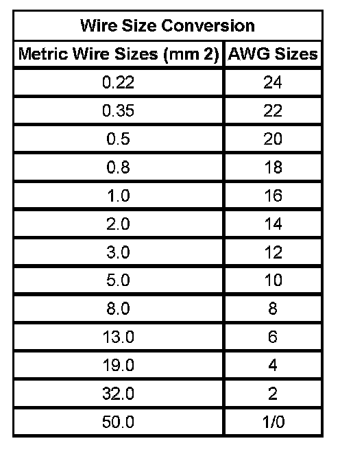

Repairing Damaged Wire Insulation
REPAIRING DAMAGED WIRE INSULATION
Wire Size Conversion:

If the conductive portion of the wire is not damaged, locate the problem and apply tape around the wire. If the damage is more extensive, replace the faulty segment of the wire. Refer to Splicing Copper Wire Using Splice Clips and follow the instruction to repair the wire.